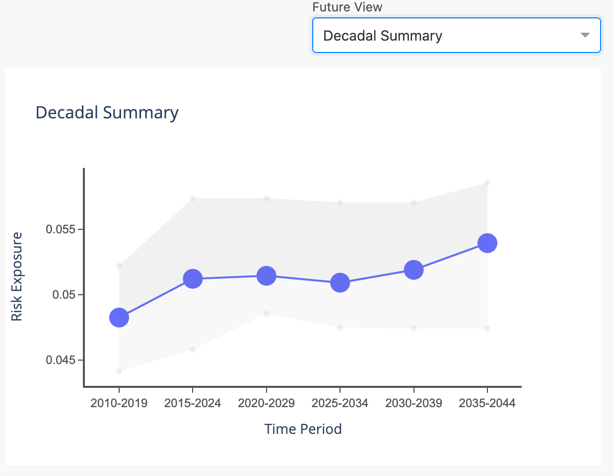
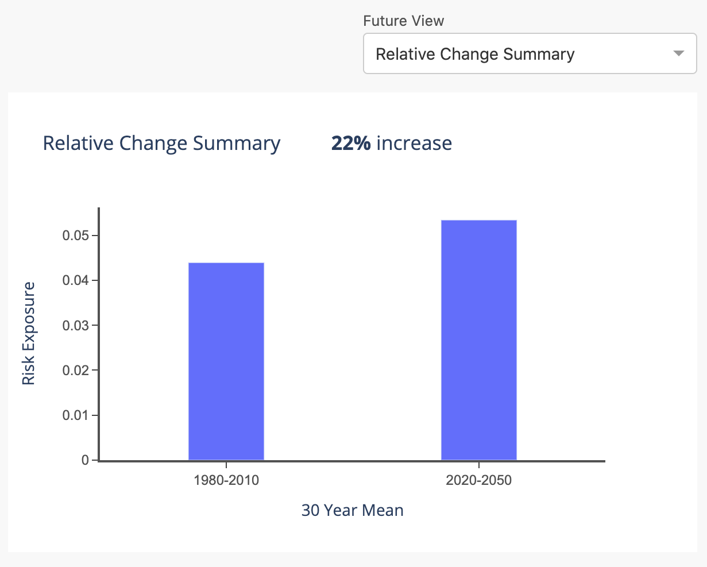
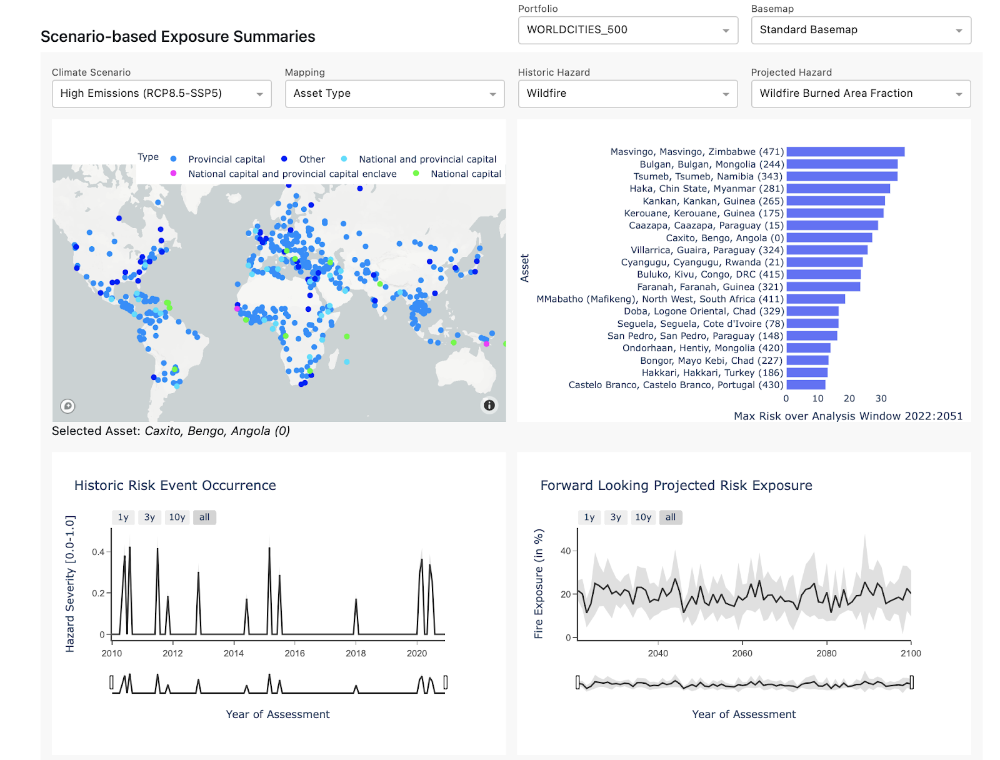

Product Updates
The following is a list of running product updates to the Sust Global datasets and Climate Explorer.
08AUG2023 V1.0.3 Release
Data Product Updates
- Updates to observed indicators
- Observed cyclones - Updated to 2022 and to updated to reflect Cat1 and above storms rather than Cat3 and above storms provided previously, with monthly cadence.
- Observed water stress Updated to 2022, with monthly cadence.
- Observed flood Updated to April, 2022, with monthly cadence.
- Observed heatwaves New indicator available.
- Observed SLR New indicator available based on nearest tide gauge dataset, interpolated globally.
- Bug fixes and updates
- Heatwaves and SPEI have been updated to use the correct data for SSP1.
- For Water Stress Score, we have methodology updates, changing order in which interpolation, censoring and gap-filling occur for easier data processing.
- For Water Stress Unified, we fixed a bug that led to incorrect unification weights in some geographies.
- For Cyclone Value-at-Risk, we now interpolate probabilities, not wind speeds.
- For Financial Risk, we now calculate uncertainty separately for upper and lower bounds.
New Product Features
- Financial risk analysis now include risk of business interruption, in terms of days of interruption due to cyclones, floods, wildfires, and heatwaves.
- Users can now download filtered downloads of CSVs through climate explorer, allowing users to download specific hazard summaries or indicator time series through the UI portfolio management.
11APR2023 V1.0.2 Release
Data Product Updates
- Improved accuracy of wildfire modeling, using many more variables to predict future wildfire risk.
- More precision in historic wildfire data, using 500m data instead of 1km data, and updating historic data to 2022.
- Improved modeling of cyclone probabilities, especially in Gulf of Mexico.
- Improved modeling of flood and cyclone value-at-risk, including better interpolation and integration algorithms.
14FEB2023 V1.0.1 Release
Data Product Updates
- Improved accuracy of flood modeling, especially in FEMA and international flood zones.
- Improved parameterization of flooding damage curves to include a “doorstep” height that flooding must overcome to damage a structure.
New Product Features
- Versioning included in metadata file for each release, labelling older releases as V1.0.0 and this release as V1.0.1
05JAN2023 Release
Data Product Updates
- Improved scenario driven, probabilistic flood projections at 1km resolution across climate scenarios SSP2-RCP45 and SSP5-RCP85.
- Improved probabilistic cyclone projections at 10km resolution across climate scenario SSP5-RCP8.5.
New Product Features
- Our new financial risk analytics derived from asset level risk exposure to acute hazards (wildfire, flood, cyclone) processed through asset type and sector specific damage functions. These will be available through the CSV datasets and Climate Explorer dashboards.
- Our fast location-based risk insights search capability accessible through API and dashboard. This feature is available on request.
20SEP2022 Release
Data Product Updates
- We are updating the historic flood exposure dataset to best reflect historic riverine and coastal floods through satellite derived observations. We start with satellite-derived measurements of impermanent standing water. We then post-process the satellite data using hydrological data and topographic datasets.
- We are incorporating a more precise sea level rise projection capability that accounts for global glacier melts and land subsidence and rebound across different forward looking climate scenarios.
- To optimize the representation of inland flood potential and cyclone projections, we are providing a filtered version of annualized flood and cyclone data using a kernel weighted multi-decadal window. This will show a smoother annualized forward looking time series exposure projection on the Climate Explorer forward looking time series view.
- We have updated the unified wildfire indicator to account for specific fire climate conditions and burnable land to optimize wildfire projections in fire prone regions with limited to no historic wildfire exposure.
08JUL2022 Release
Data Product Updates
- Increased resolution drought and heatwave: We have enabled high resolution climate data for the drought (hazard: water_stress indicator: spei_norm) and heatwave (hazard: heatwave) datasets. This increases the resolution of these datasets from 1 degree to 0.25 degree. These indicators are derived from NASA Global Daily Downscaled Projections (NEX-GDDP).
- Historic flood data: We have introduced high resolution satellite derived observed flooding for our historic exposure time series. The time series represent binary observed flood/no flood at the asset location at an annual cadence. This dataset is at a spatial resolution of 250 meters, available globally and derived from the NASA MODIS NRT Global Flood dataset.
- Historic fire data: We have introduced high resolution satellite derived observed wildfire for our historic exposure time series. The time series represent binary observed fire/no fire within 1 km of the asset location at a monthly cadence. This dataset is at a spatial resolution of 500 meters, available globally and derived from the NASA MODIS Active Burned Area dataset.
- We have updated the developer center documentation to reflect changes to our User Guide and introduced our new CSV Dataset Guide and Data Guide. The Data Guide includes visual representations of our global exposure maps at the US county level and select regions around the world and lists of the most exposed administrative regions in these slect geographies.
New Product Features
- Introducing the new unified wildfire indicator as an additional indicator for forward looking scenario based projections in Climate Explorer and the Sust Global API
- This indicator combines the projections from the burned area fraction and the KBDI susceptibility score, benchmarked against the observed wildfire indicator to create a unified measure of wildfire probability within 1 km of a specific location. It can be interpreted as the probability of wildfire occurring within one kilometer of an asset location within a given year. The unified wildfire indicator when aggregated over a period of time (10 yrs) provides for a measure of probability of wildfire occurrence within 1 kilometer of the asset over the next 10 years. The native resolution of this indicator is 300 meters.
- This new unified wildfire indicator is surfaced when selecting the hazard Wildfire using the drop down on Climate Explorer
- The unified wildfire indicator is used for deriving the summary scores and summary labels in Climate Explorer and for the CSV datasets.
- The unified wildfire indicator is available through API using the filters hazard: wildfire and indicator name: unified_prob
- Previously available wildfire indicators burned_area_norm and fire_kbdi_susceptability will continue to be available through the API and the CSV datasets but not available in the dashboard view in Climate Explorer.
- Introducing the new unified water stress indicator as an additional indicator for forward looking scenario based projections in Climate Explorer and the Sust Global API
- This indicator combines the water stress score and the drought indicator to one single indicator for water stress, using a weighting methodology designed by the World Resources Institute in their Global Aqueduct Methodology. This provides a comparable 0.0 to 1.0 range to indicate exposure to water stress. The native resolution of this indicator is 500 meters.
- This new unified water stress indicator is what is surfaced when selecting the hazard Water Stress using the drop down on Climate Explorer
- The unified water stress indicator is used for deriving the summary scores and summary labels in Climate Explorer and for the CSV datasets.
- The unified water stress indicator is available through API using the filters hazard: water_stress and indicator name: unified_score
- Previously available water stress indicators score and spei_norm will continue to be available through the API and the CSV datasets but not available in the dashboard view in Climate Explorer.
- Water stress scores (hazard: water_stress, indicator: score) are now capped at an upper limit of 1.0 instead of 4.0. A value of 1.0 indicates that annual water demand is equal to or exceeds the annual renewable supply. Demand can exceed renewable supply when non-renewable water sources like aquifers are accessed. The normalization value for standardizing values between 0.0 and 1.0 is now 1.0 instead of 4.0. This change impacts the magnitude of water stress score values given in the summary score CSVs.
- Introducing the new historic water stress indicator as an additional historic indicator in Climate Explorer and the Sust Global API
- For this indicator, we use the same methodology as the unified water stress indicator, except with observed rather than modeled datasets of water stress and drought.
- The historic water stress indicator is available through API using the filters hazard: hazard: water_stress and indicator name: obs_score.
- Water stress scores are now capped at an upper limit of 1.0 instead of 4.0. A value of 1.0 indicates that annual water demand is equal to or exceeds the annual renewable supply. Demand can exceed renewable supply when non-renewable water sources like aquifers are accessed. The normalization value for standardizing values between 0.0 and 1.0 is now 1.0 instead of 4.0. This change impacts the magnitude of water stress score values displayed in the Climate Explorer Normalized multi-hazard time series view plot.
- Introducing two new forward looking exposure time series plots and reporting options:
- Decadal summary time series: A new Decadal Summary view has been enabled for forward looking risk, which presents decadal summaries based on 10 year moving averages at 5 year offsets. This provides a representative view of risk exposure for the selected hazard for the selected scenario.
- Relative Change summary: A new Relative Change Summary view has been enabled for forward looking risk, which presents relative change based on 30 year averages from the 1980-2010 and the 2020-2050 time windows. We also quantify the relative change as a percentage of past exposure in the dashboard view.

Fig 08JUL2022 A: Decadal summary view

Fig 08JUL2022 B: Relative change summary view
02MAY2022 Release
Data Change to Error Bar Calculations
As of May 1, 2022, we have made an update to how we estimate risk in order to more accurately represent uncertainty and the spread of modeled outcomes. Our error bars will now show the 16th and 84th percentile of represented models, rather than +/- one standard deviation. Additionally, projections will show median instead of mean values, reducing the influence of outlier projections from our models. Correspondingly, our Low/Medium/High calculations are now based on median values instead of mean values. This feature has not yet been rolled out for cyclones.
Drought Indicator Data Rescale
Beginning May 1, 2022, we have released updated Drought indicator data (API indicator named spei_norm under hazard: water_stress), rescaling values to a more intuitive range and increasing the number of source models used to construct the metric from 5 CMIP6 models to 21 CMIP6 models. With the new Drought rescaling, drought index (SPEI) values fall between an easy to interpret 0 to 1 range, reaching index values of 1.0 if the drought exposure are at unprecedented levels relative to the 1950 to 2014 historical period and value of 0.0 indicating no drought exposure. The increase in contributing CMIP6 models to our product will provide better model ensembles with more representative confidence intervals in the forward-looking drought projections.
Wildfire Forward Looking Projection Data
As of April, 2022, the Climate Explorer backend data source for Wildfire Burned Area Fraction and Historic Fire has been updated to include a high spatial resolution mask of non-burnable areas. The dataset now includes higher resolution land cover masks to determine if an area is at risk of fire or has seen historic fires. For existing customers, there may be underlying data changes in those assets, especially those bordering urban/rural boundaries.
Automated Historic Fire Data
As of April, 2022, Sust Global now has an automated historic fire data ingestion process. Historic fire data in Climate Explorer is now derived from a satellite feed, and continuously displays the latest data as soon as it is released.
15APR2022 Release
UI Change – Project Switch Feature
As of April, 2022, our UI has changed to include a simpler way to switch between projects in the top right bar of Climate Explorer.
Drought Indicator Data Rescale
Beginning May 2, 2022, we will release updated Drought indicator data, rescaling values to a more intuitive range and increasing the number of models used to construct the metric from 5 CMIP6 models to 21 CMIP6 models.
With the new Drought rescaling, drought index (SPEI) values fall between an easy to interpret 0 to 1 range, reaching index values of 1.0 if the droughts are unprecedented relative to the 1950 to 2014 historical period. With the substantial increase in contributing CMIP6 models, we have greater confidence in the forward-looking drought projections and estimates of uncertainty.
API Indicator Metadata Change
As of April, 2022, Sust Global’s Indicator level metadata has changed. Below is an example of how to secure indicator level metadata from our API:
Giving you a representative response as follows:
{
"portfolio_name": "DEMO",
"created_at": "2022-04-12T23:34:59Z",
"updated_at": "2022-04-12T23:34:59Z",
"sha256_digest": "c497595ec7e16b1e36c37baa4bed6abef2ab4f3749495d97de7ef9cb3370758a",
"indicators": [
{
"hazard": "wildfire",
"indicator": "obs_score",
"unit": "score",
"value_min": 0.0,
"value_max": 1.0,
"value_norm": 1.0,
"spatial_resolution": 300.0
},
{
"hazard": "flood_potential",
"indicator": "obs_score",
"unit": "score",
"value_min": 0.0,
"value_max": 1.0,
"value_norm": 1.0,
"spatial_resolution": 1000.0
},
{
"hazard": "cyclone",
"indicator": "obs_freq",
"unit": "frequency",
"value_min": 0.0,
"value_max": 2.0,
"value_norm": 2.0,
"spatial_resolution": 1000.0
},
{
"hazard": "wildfire",
"indicator": "unified_prob",
"unit": "prob",
"value_min": 0.0,
"value_max": 1.0,
"value_norm": 1.0,
"spatial_resolution": 300.0
},
{
"hazard": "flood_potential",
"indicator": "inland_flood_prob",
"unit": "probability",
"value_min": 0.0,
"value_max": 1.0,
"value_norm": 1.0,
"spatial_resolution": 4000.0
},
{
"hazard": "water_stress",
"indicator": "spei_norm",
"unit": "score",
"value_min": -3.0,
"value_max": 3.0,
"value_norm": 3.0,
"spatial_resolution": 100000.0
},
{
"hazard": "water_stress",
"indicator": "score",
"unit": "score",
"value_min": 0.0,
"value_max": 4.0,
"value_norm": 4.0,
"spatial_resolution": 500.0
},
{
"hazard": "sea_level_rise",
"indicator": "change",
"unit": "meter",
"value_min": -0.2,
"value_max": 2.0,
"value_norm": 0.75,
"spatial_resolution": 100000.0
},
{
"hazard": "cyclone",
"indicator": "prob",
"unit": "probability",
"value_min": 0.0,
"value_max": 1.0,
"value_norm": 0.5,
"spatial_resolution": 50000.0
},
{
"hazard": "heatwave",
"indicator": "freq",
"unit": "day",
"value_min": 0.0,
"value_max": 365.0,
"value_norm": 200.0,
"spatial_resolution": 100000.0
},
{
"hazard": "fundamental",
"indicator": "temp",
"unit": "degree_celsius",
"value_min": -5.0,
"value_max": 45.0,
"value_norm": 45.0,
"spatial_resolution": 100000.0
},
{
"hazard": "fundamental",
"indicator": "precip",
"unit": "millimeter",
"value_min": 0.0,
"value_max": 5000.0,
"value_norm": 5000.0,
"spatial_resolution": 100000.0
},
{
"hazard": "fundamental",
"indicator": "extreme_precip",
"unit": "day",
"value_min": 0.0,
"value_max": 365.0,
"value_norm": 365.0,
"spatial_resolution": 100000.0
}
]
}
Entity_ID-based filtering added to API
As of April, 2022, we have added Entity ID as a request parameter in our API. This update was made to three different endpoints: assets, physical risk summary and physical risk time series.
With entity ID filtering, customers can now filter API responses to get resulting asset metadata, risk exposure data and risk exposure summaries for a specific asset in the portfolio.
Below is an example of how to filter summary end point results based on a specific entity_id [ENTITY_ID] using this new feature:
GET https://explorer.sustglobal-staging.io/api/portfolios/[YOUR_PORTFOLIO_NAME]/datasets/physical/summary?project=[YOUR_PROJECT_NAME]&hazard=[HAZARD_NAME]&indicator={INDICATOR_NAME]&entity_id=[ENTITY_ID]
Giving you a representative response as follows:
{
"portfolio_name": "ec-DEMO",
"portfolio_index": 20,
"entity_name": "AGE",
"entity_id": "Logistics",
"risk_summaries": [
{
"window": 30,
"window_start_year": 2022,
"scenario": "ssp126",
"hazard": "fire",
"risk_label": "LOW",
"risk_score": 0.0648730561815109
},
{
"window": 30,
"window_start_year": 2022,
"scenario": "ssp245",
"hazard": "fire",
"risk_label": "LOW",
"risk_score": 0.060258992778519
},
{
"window": 30,
"window_start_year": 2022,
"scenario": "ssp585",
"hazard": "fire",
"risk_label": "LOW",
"risk_score": 0.0776790953102628
}
]
}
28MAR2022 Release
FAQ Documentation on Developer Center
As of March, 2022, the Sust Global Developer Center has been updated with a new FAQs section for Climate Explorer.
Service Accounts Feature
Starting April 1, 2022, customers will have access to a Service Accounts feature under a new “Project Settings’’ tab within Climate Explorer. Service accounts are non-user specific privileged accounts, and can be used by customers executing applications and running automated services with our API. Service accounts offer a high level of security for customers accessing the Climate Explorer under a shared team login, and can easily be referenced in applications or processes.
21MAR2022 Release
Climate Explorer UI Changes
As of March 2022, there has been a UI update to the Climate Explorer Risk Exposure dashboard. The first four plots (the Scenario based Exposure Summaries and Historic and Projected Risk Exposure) can now all be configured via a single set of drop downs.

Additionally, the drop down label for “Asset Grouping” has been renamed to “Mapping.”
The number following the asset display name is the “portfolio index” (see below example of WORLDCITIES_500) represents the row index of the asset in the originally-uploaded CSV file.
New Hazard – Water Stress Score
As of Monday, March 7th, 2022, Sust Global has added a new hazard type: Water Stress. This hazard covers a water stress score and drought (normalized SPEI) as indicators. Additionally, there are plans to roll out a historic water stress score in the near future
Water Stress is now live in Climate Explorer, and includes the following description in the User Guide:
We model current and forward-looking water stress scores using the World Resource Institute’s Aqueduct model. The state-of-the-art Aqueduct model has been extensively used by researchers in academia and industry to assess portfolio water risk.
The presented water stress score is the ratio of water withdrawal to renewable water availability. Water withdrawal incorporates a diverse set of global data sources, including: population, livestock, agriculture, irrigation, and other socioeconomic factors. They encompass domestic, industrial, irrigation, and livestock uses. Renewable water availability, which includes surface and groundwater pools, is calculated using a global hydrological model that incorporates meteorological and landscape characteristics.
In basins experiencing high water stress (>0.4), withdrawals are large relative to renewable available water, indicating greater competition for water resources. This ratio can exceed 1.0 when non-renewable water sources like aquifers are accessed, and in practice we clip any outliers exceeding 4.0. We also interpolate values in missing years.
Currently, all climate models are run under the High Emissions or Middle of the Road scenarios with CMIP5-based meteorological inputs, so the water stress score values presented for the Strong Mitigation scenario are identical to those in the Middle of the Road scenario. Simulations were also only run out to 2050, so exposure values for 2051-2100 represent the mean over the 2030-2050 period. We plan to expand our offering to include a Strong Mitigation scenario and to extend beyond 2050 in a future product update.
11MAR2022 Release
New Hazard Views: Wildfire Susceptibility & WIldfire Burned Area Fraction
On Monday, March 7th, 2022, new hazard labels were added for wildfires in Climate Explorer: Wildfire Susceptibility & Wildfire Burned Area Fraction. In Q2 2022, we will have additional updates to historic data.
Thresholds for this hazard have been updated within the User Guide has been updated with the following information:
Wildfire: Burned Area Fraction
We represent annual fire risk by aggregating CMIP6 model simulations of monthly wildfire burned area [% of grid cell]. Wildfire models incorporate factors such as temperature, precipitation, land cover type, and population to simulate fire occurrence and the associated area burned. We use our proprietary methodologies for wildfire super resolution NeurIPS2020 technical reference on top of the model ensemble to enable high resolution wildfire projections. These projections are further processed using the latest satellite derived land cover maps, filtering for the urban-wildland interface to further refine the projections.
For example: fire occurrence includes both lightning and human-induced ignitions, and high temperatures and drought lead to drier fuels and increased likelihood of fire.
Wildfire Susceptibility
We also use fire weather as an indicator of fire risk. This indicator shows the average annual probability of a fire occurring within a kilometer of the asset location. We derive this indicator based on the historic functional relationship between fire weather and the daily probability of fire, taking into account on-the-ground characteristics like land cover types and climate zones that constrain vegetation types and structure. We then apply this functional relationship based on historic observations to ensembled CMIP6 predictions of future weather to estimate future fire probabilities.
When estimating fire risk for a given asset, we take the average risk over all land cover types within 1 kilometer. Thus, for an asset that has 50% urban areas and 50% forested areas within 1 kilometer, the fire probability is the mean of the fire risk for these two land cover types.